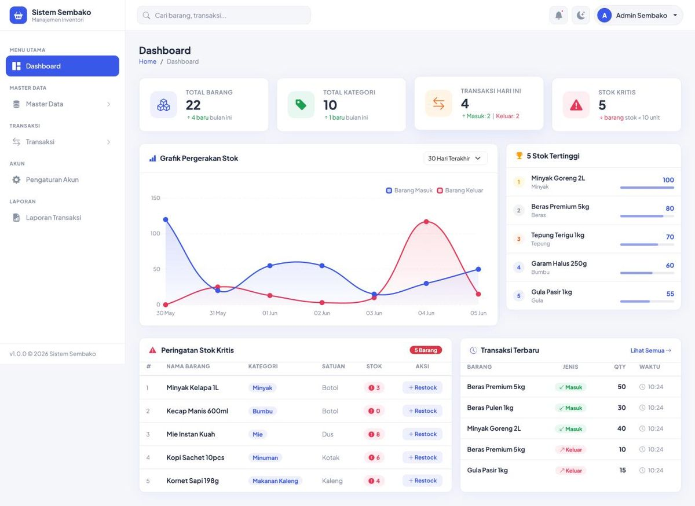

2026Sertifikasi Junior Web Programmer
Warung JWP: inventori toko sembako
Toko sembako perlu mencatat stok dan transaksi barang serta memantau persediaan tanpa catatan manual. Aplikasi ini mengelola stok, mencatat barang masuk dan keluar, lalu menyajikan dashboard dan laporan.
- Teknologi
- Laravel 13, MySQL, Bootstrap 5, Chart.js, Blade
- Peran
- Pengguna Admin dan Pimpinan dengan hak akses berbeda
- Database
- 4 tabel utama: categories, products, stock_transactions, users
- Data
- 22 barang, 10 kategori, 27 transaksi

Fitur untuk Admin
- Login dan logout, ubah profil dan password
- CRUD kategori dan daftar barang
- Transaksi barang masuk menambah stok otomatis
- Transaksi barang keluar mengurangi stok otomatis
- Sistem menolak barang keluar yang melebihi stok
- Laporan transaksi dengan filter tanggal dan jenis, bisa dicetak
Fitur untuk Pimpinan
- Melihat dashboard: grafik stok, 5 stok terendah dan tertinggi
- Membaca dan mencetak laporan transaksi
- Menu Master Data dan Transaksi tidak tersedia untuk role ini